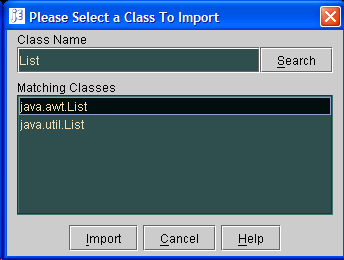
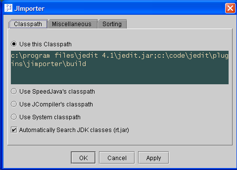
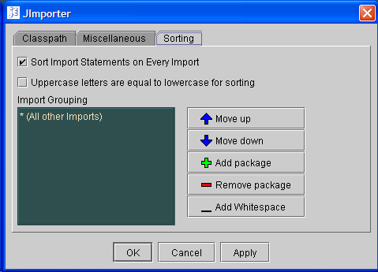

JImporter is a plugin for JEdit that will generate import statements at the
top of a Java Class given the (non-fully qualified) name of a class. It does
this by searching through a classpath that you specify through the JImporter
options. JImporter includes options to group imports into your favorite
categories and to sort them in the way that you prefer.
 JImporter importing the "List" class
Classpath Options
The classpath that is searched can come from a variety of sources. You
choose which source you'd like to use through the configuration page of
JImporter, a screenshot of which is shown below.
 The Classpath option pane allows you to choose where jEdit will find your classpath
Use this Classpath
Use the classpath that is indicated in the textbox. The classpath should
be in the same format you'd expect in an environment variable in your
operating system. For example, if you are in Windows, your classpath should
be delimited with semicolons. In unix, the classpath should be delimited
with colons.
Use SpeedJava's classpath
Use the classpath that was specified for the SpeedJava plugin. This
prevents you from having to specify your classpath in (yet another) place.
Use JCompiler's classpath
Use the classpath that was specified for the JCompiler plugin. This
prevents you from having to specify your classpath in (yet another) place.
Use System classpath
Use the classpath that was specified when you started JEdit.
Automatically Search JDK Classes
When this option is selected, JImporter will append the location of the rt.jar
library to your classpath automatically. This is useful because newer JDK's
no longer require the location of this jar to be in the classpath.
Sorting and Grouping Options
JImporter allows you to sort your imports, either automatically when you
import a file, or by choosing the "Sort Imports" action from the JImporter
menu. This sorting allows you to keep your import statements "tidy."
Sorting often isn't as easy as alphabetically arranging imports though. Some
users would like to have case sensitive sorting, others do not. Another
category of users like to have certain import statements appear above others,
even though they aren't alphabetically supposed to be ordered in that way.
For these reasons, JImporter attempts to allow a lot of configurability. It
is possible to group your imports according to package, or pattern.
 The sorting and grouping pane
The sorting pane also gives you the options. "Sort Imports on Every Import"
will sort all of your import statements every time you create an import
statement using JImporter. "Uppercase letters are equal to lowercase for
sorting" satisfies those who consider uppercase letters to be higher in the
alphabetic sorting order than lowercase letters.
Miscellaneous options
JImporter provides configurability so it can try to make at least some of its
users happy. Here are some other miscellaneous options that you might be
interested in:
Automatically Search When Importing at Point
If you have bound a key to "Import Class at Point" and if you have a fast
machine, this can be a good option for you. Effectively, this option
automatically clicks on the "Search" button to save you time. You must have
this option selected if you want to automatically import classes when only
one exists.
Automatically Import when only 1 Match Exists
The name says it all. If there is only one match when you do an import at
point, automatically generate that import without showing the dialog box.
Searching Method
This is the method that JImporter will use to find the package name of any
classes that you decide to import. In the early versions of JImporter, I've
decided to stick with the brute-force method of searching. This method will
iterate through all of the directories and jar files in your classpath to
search for matching classes.
Initially, this sounded really awful, as I was concerned that performance
would be abysmal. However, I found out that modern operating systems do a
reasonably good job at caching their filesystem entries. While the first
search is pretty slow, subsequent searches aren't.
I fully intend to replace this searching method, eventually. It isn't that
I don't know how to use Hashmaps, it just turns out that the problem is
slightly more complicated than that to solve. I have a big list of things
I keep in the Todo List to keep me busy and this one
hasn't bubbled up far enough to get fixed. I will do it eventually though.
(If someone donates code, I won't turn it away though.)
Keyboarding Issues and Solutions
There are currently some keyboarding interface issues in JImporter from my
startpoint. In my perfect world, this would be how everything would work:
1. You put your cursor on a class and press a key combination to import the
class at the point. (I use CS-i as my shortcut.)
2. The import dialog box would come up. As you type in the name of the
class, the field of classes would quickly narrow and be shown in the dialog
box.
3. Once you had a reasonable number of classes left in your box, you'd
use your up and down arrows to select a class and hit enter.
Boy, I wish that were the case. The problem is that my current "brute force"
method of searching is just a bit too slow to keep up with this. Every
character that you type will take a few seconds to generate a matching
result set. For the meantime, here is how it works:
1. You put your cursor on a class and press a key combination to import the
class at the point.
2. The import dialog box would come up. Press enter to search for the
class your cursor was on, or type a new name and press enter.
3. A list of matching classes comes up. Use the up and down arrows. When
you find one you like, press Alt-I to import.
I'll probably always keep the brute force method around though. It just
doesn't take a lot of memory, which makes me happy.
Contact Information
Please feel free to contact me regarding this plugin. I can be reached at
MattFlower@yahoo.com.
Bugs or feature requests
If you find a bug, please report it on the JEdit project on sourceforge.
Feature requests should be sent directly to my email address. It might not
be a bad idea to CC the JEdit mailing list too.
Code contributions
I welcome all contribution of code!
If you would like to contribute code to JImporter, please send any patches
in unified diff format to my email address.
If you don't know how to do unified diff format, talk to me and we'll figure
something out.
Please try to comment your code and use good variable naming conventions. Any
code that you submit is subject to frequent refactoring and commenting, which
I enjoy doing.